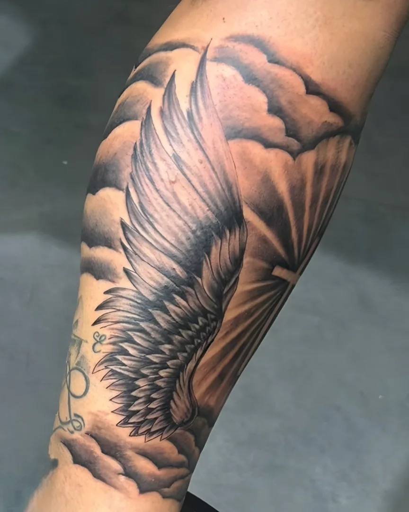
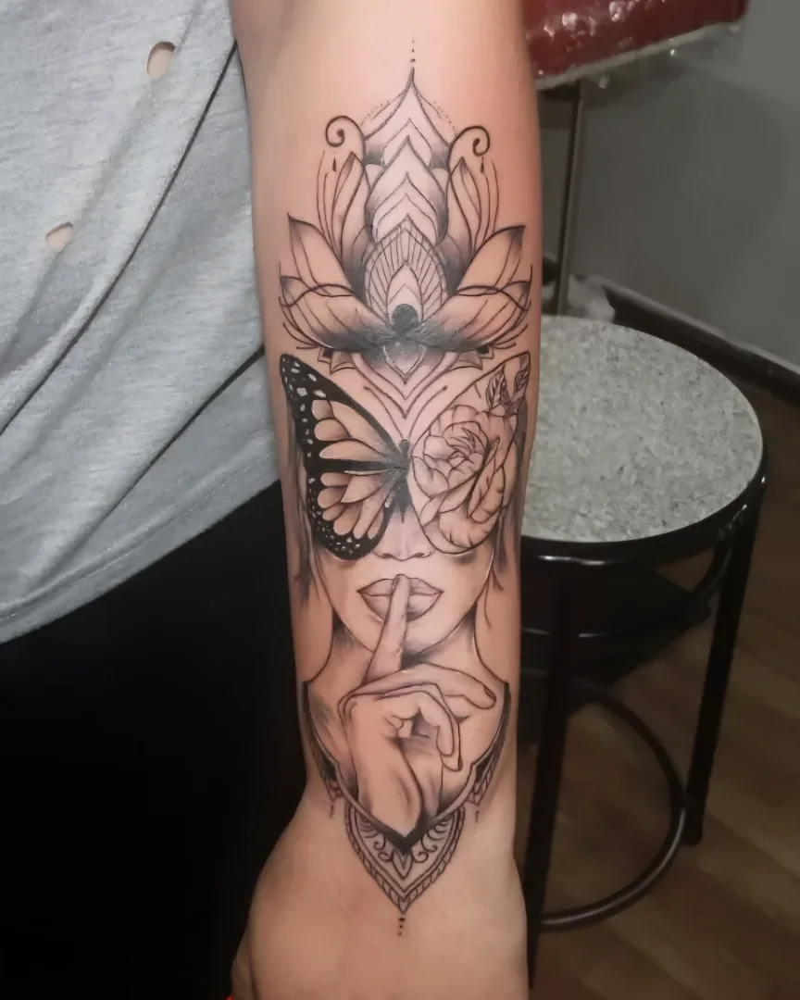
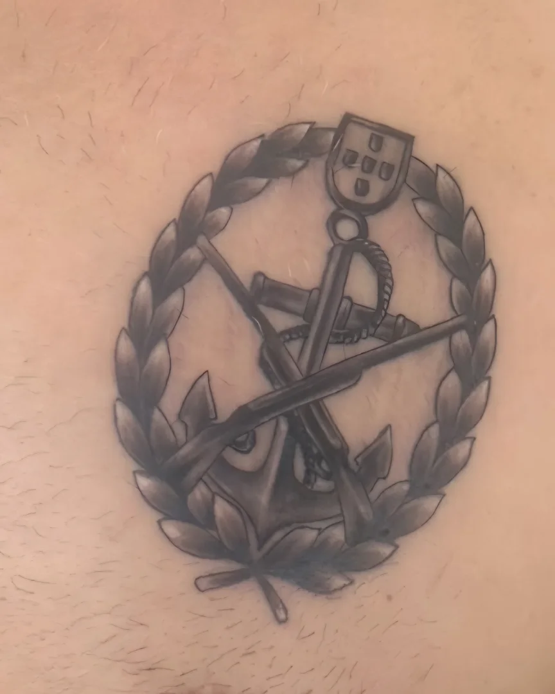
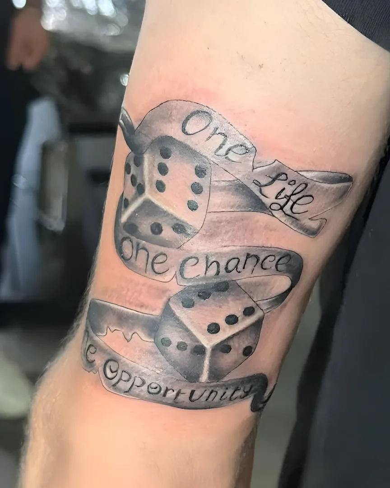
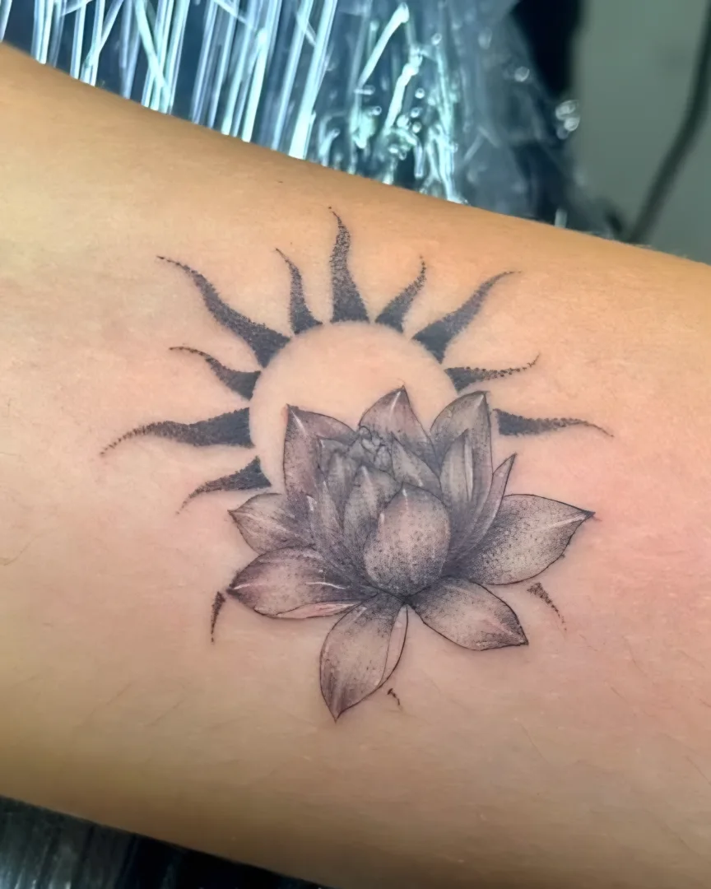
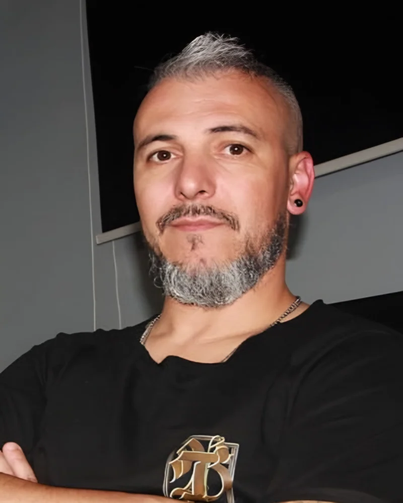
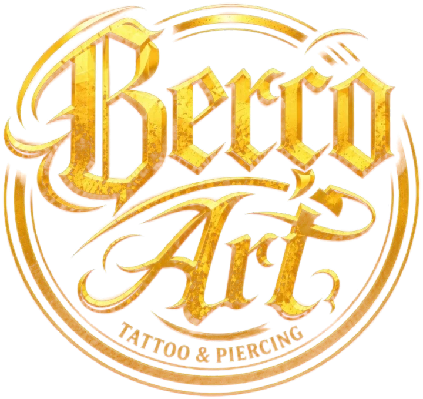

Asa e cruz
“Há tatuagens que não são apenas desenhos, são formas de manter presente aquilo que nunca queremos esquecer.”
A fé e a presença de quem está longe.
Berço Art Tattoo & Piercing · Guimarães
Black & Grey · Blackwork · Sketch · Fine Line

Portefólio
Peças feitas pelo Vitor na Berço Art, na Bogas Tattoo e em convenções.
Nas palavras dele

“Há tatuagens que não são apenas desenhos, são formas de manter presente aquilo que nunca queremos esquecer.”
A fé e a presença de quem está longe.

“O símbolo dos Fuzileiros Portugueses eternizado na pele. Fuzileiro uma vez, Fuzileiro para sempre.”
Uma honra na pele.

“Na vida só há uma oportunidade para arriscar… e cada escolha marca o nosso caminho.”
Cada escolha marca o caminho.

“Um sol que simboliza força e energia, com a flor de lótus, símbolo de renascimento, equilíbrio e paz interior.”
Força e renascimento.
O Vitor

Vitor Novais é tatuador e dono da Berço Art Tattoo & Piercing, em Mesão Frio, Guimarães. Trabalha black & grey, blackwork, sketch e fine line: rosas, retratos, figuras de fé, animais e peças de memória com nomes e datas.
Antes de abrir o próprio estúdio, em junho de 2026, tatuou na Bogas Tattoo, em Fafe. Leva o trabalho a convenções em Portugal e lá fora, e atende também na Suíça, no Luxemburgo e em Espanha.
“Cada tatuagem conta uma história, e cada detalhe tem um significado.”
Convenções e guest
O estúdio

Rua Cruz de Argola, 954
Mesão Frio, 4810-225 Guimarães
Em frente à Junta de Freguesia de Mesão Frio.
Marcações
Preenche, a mensagem fica pronta e segue para o WhatsApp do Vitor.
Conta o que queres tatuar e o estilo.
Onde vai ficar e mais ou menos que medida.
O Vitor responde com valor e proposta.
Marcam o dia na Berço Art.